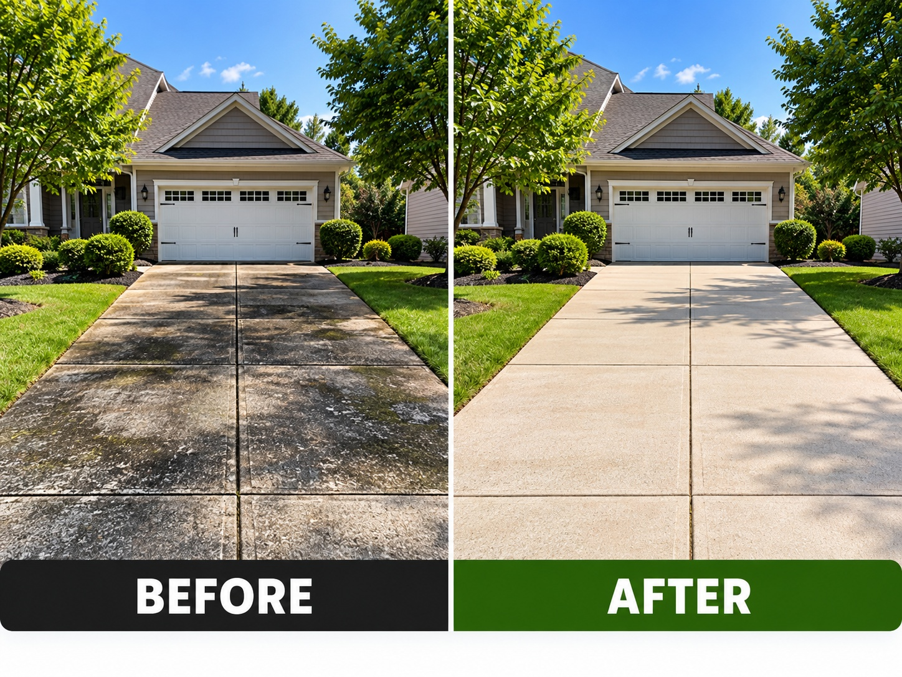
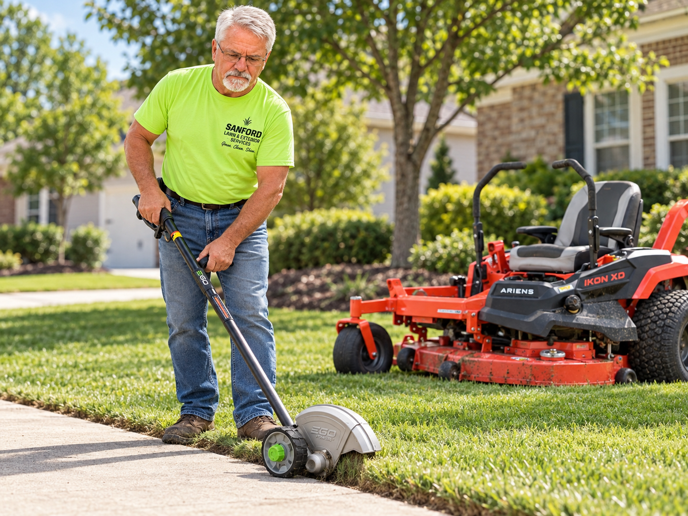
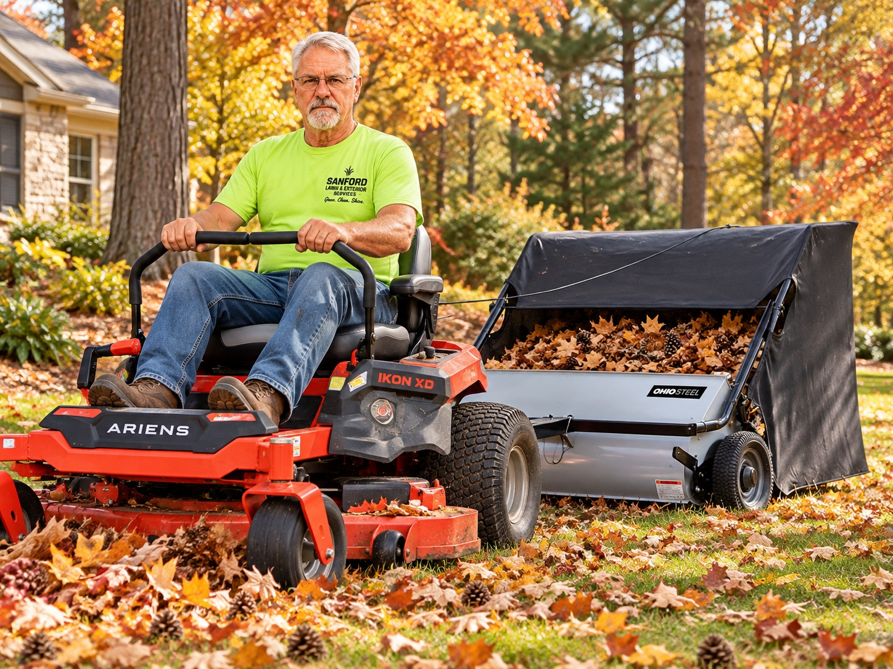
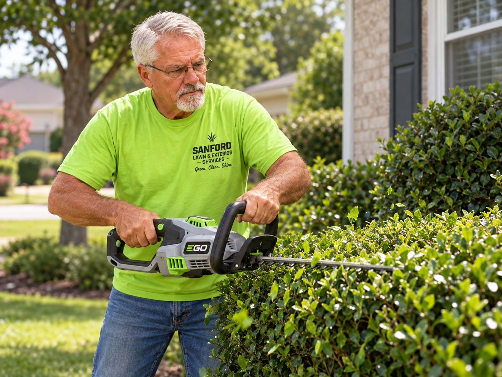
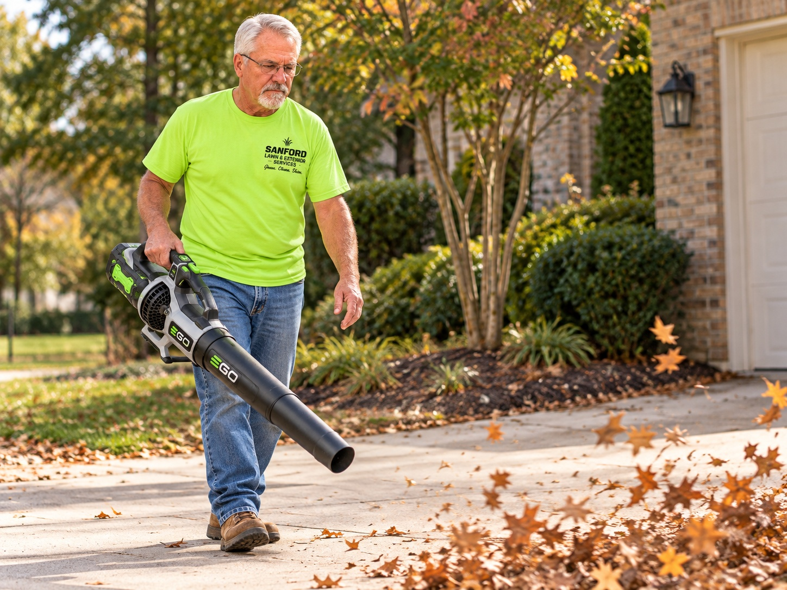
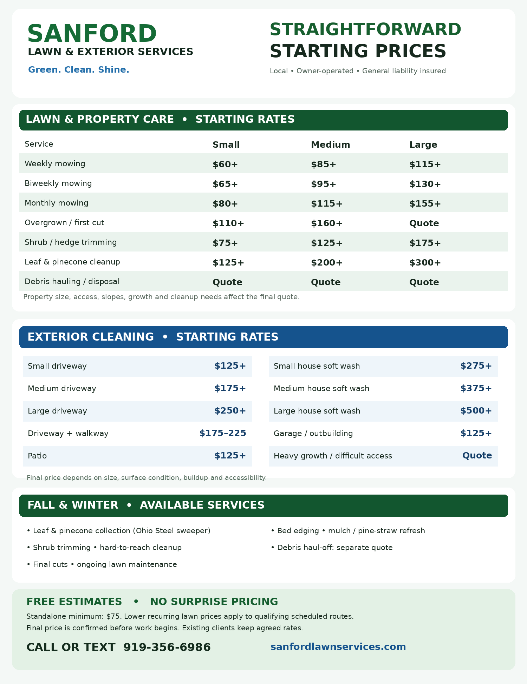
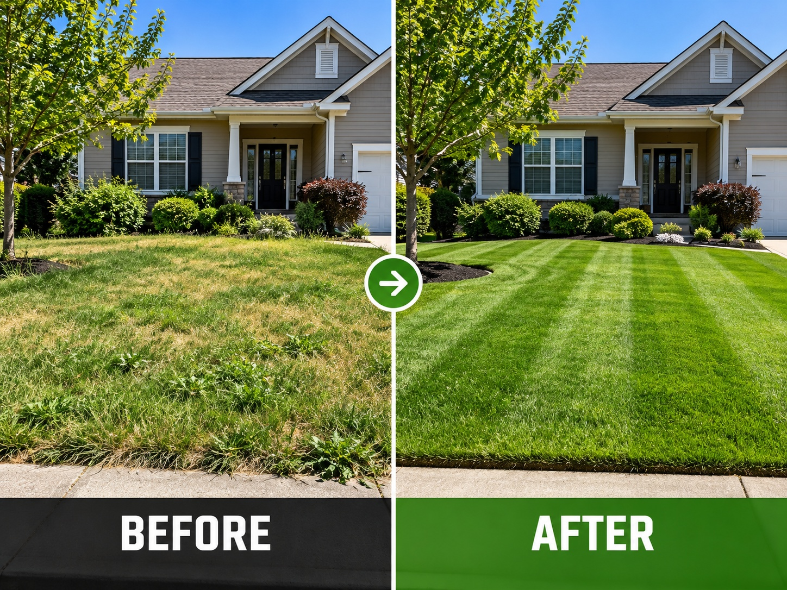

Lawn Care
Mowing, edging, trimming, blowing, and ongoing lawn maintenance.
Honest work. Reliable service. No nonsense. Sanford Lawn & Exterior Services helps homeowners keep their lawns, landscapes, driveways, and exterior surfaces looking clean, sharp, and well cared for.

Watch Vincent introduce our local, owner-operated lawn and exterior services. See how we can help care for your property beyond mowing season.
Request a Free EstimateMowing, edging, trimming, blowing, and ongoing lawn maintenance.
Driveways, sidewalks, patios, walkways, and exterior surfaces.
Leaf and pinecone cleanup, shrub care, bed maintenance, and debris removal.
Professional invoices available. Convenient payment options accepted.
Professional lawn maintenance, seasonal property care, and exterior cleaning for homeowners throughout Sanford and nearby communities.

Weekly, biweekly, and monthly mowing, edging, trimming, blowing, and seasonal final cuts.
Driveways, sidewalks, walkways, patios, siding, and suitable exterior surfaces.

Seasonal leaf, pinecone, and yard debris collection, including use of our Ohio Steel tow-behind sweeper where suitable.

Shrub trimming, bed cleanup, edging, mulch or pine-straw refresh, and hard-to-reach property areas.

Yard debris and leaf haul-off available when needed. Quoted separately.
8 Google Reviews
As of October 11, 2026
Real customers. Real results. Local service you can trust.
"Vincent showed up 30 minutes after my initial contact to provide me with a quote. His work was exceptional, he was communicative, and he was prompt on the day of service."
"My yard was transformed in one day for an extremely reasonable price. They are courteous, prompt, dependable, and most of all they do an excellent job!"
"My driveway literally looks so brand new that I stood outside and just stared at it for an hour! You can absolutely tell he takes pride in his work."
"His pricing was fair, his workmanship was excellent, and his communication throughout the project was outstanding."
"Started working with Mr. Vincent and we're happy to find our lawn care expert who went above and beyond to help make our home beautiful again."
"Great service and excellent work on our yard. We are very pleased. Great communication as well. Highly recommend."
Honest pricing based on property size, terrain, access, obstacles, condition, and the actual scope of work. Final estimates are provided before work begins.

Prices shown are starting prices, not guaranteed final quotes. Difficult access, heavy buildup, overgrown conditions, and additional services may require a custom estimate. Debris hauling and materials may be additional.
Sanford Lawn & Exterior Services is owner-operated by Vincent Pienaar, a dependable educator and local Sanford business owner. Vincent brings the same commitment, reliability, attention to detail, and personal accountability to his lawn and exterior services business that have defined his career in education.
From lawn mowing and edging to seasonal cleanup, shrub trimming, pressure washing, and exterior property maintenance, Vincent believes in doing the job properly. The goal is simple: show up, communicate clearly, provide honest estimates, and treat every customer's property with respect.
These images illustrate potential improvements from mowing and exterior cleaning. They are not photographs of verified customer projects.

Removing built-up grime and improving curb appeal.

Mowing, edging, and trimming for a clean, maintained lawn.
Sanford Lawn & Exterior Services provides residential lawn care, seasonal maintenance, and exterior cleaning throughout Sanford, Lee County, and surrounding areas.
Not sure whether you're in range? Check below or contact Vincent with your address and service needs.
Tell us about your property and the services you need. Vincent will personally review your request and contact you to discuss your estimate.

Leaf and pinecone cleanup, shrub trimming, bed refreshes, driveway cleaning, and other seasonal services from Vincent.
Locally owned. General liability insured. Personal attention to every property.